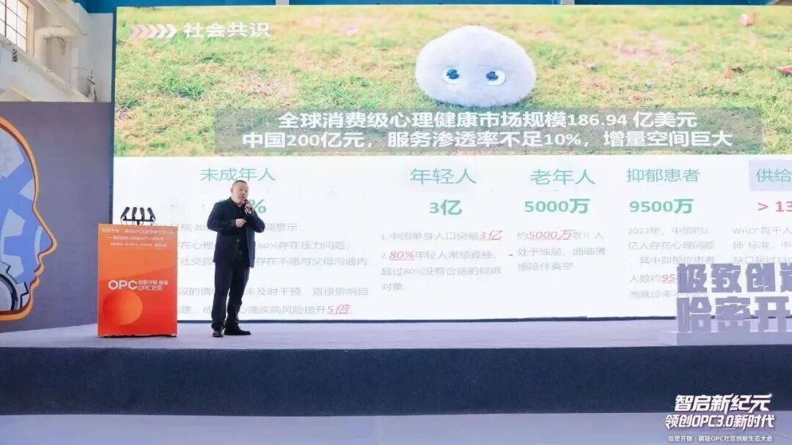
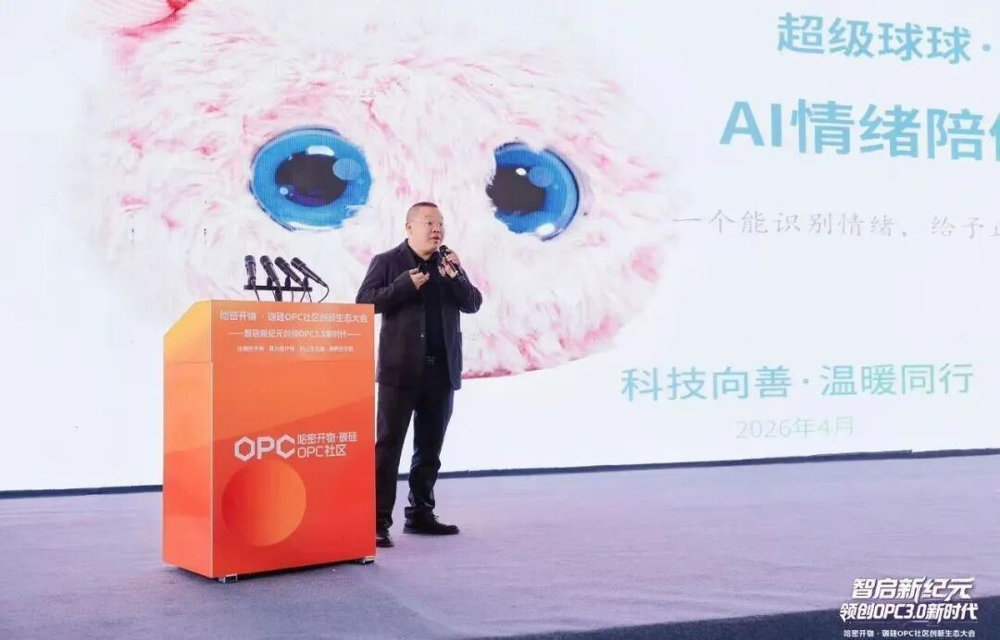

⼤会现场，超级球球渠道总监、⾼级⼼理咨询师禤国威⽼师受邀出席并发表主题分享。他在演讲中提到：01⽤AI温暖⼈⼼我们常说，AI改变了世界，但我们想做的是：⽤AI温暖⼈⼼。超级球球不仅是⼀款智能体，更是⼀颗由博⼠团队怀揣善念种下的种⼦，它专注于‘情绪陪伴’与‘正向引导’，致⼒于在⼈⼯智能的时代浪潮⾥，做每⼀个⼈的‘知⼼朋友’。
02情绪需求，正在成为“刚需”我们先看⼀组令⼈揪⼼的数据：全球⼼理健康市场已逼近187亿美元，⽽中国市场的增量才刚刚开始。
为什么？因为我们⾝边有30%的未成年⼈急需⼼理关怀，80%的年轻⼈常年与孤独为伴，还有5000万独居⽼⼈正在经历情感的‘真空期’。与此同时，专业⼼理咨询师却有130万的⼈才缺⼝。
好在去年（2025年），⼯信部、⺠政部、卫健委等多部委联合发⽂，明确⽀持‘AI+⼼理’。这不仅是政策的东⻛，更是时代的呼唤我们需要的不是冷冰冰的机器，⽽是能‘⾼频互动、温和⽆感’地融⼊⽣活的情绪陪伴产品。

球球的硬核实⼒这就是超级球球。它不只是‘能聊天’，它更懂你。
依托独创的六维⼼理评价体系与⾃研情绪疗愈模型，它能动态捕捉你的情绪波动，像⼀位耐⼼的朋友，给你最恰当的共情与疏导。
我们有四⼤技术护城河：第⼀，垂直⼼理场景的动态识别；
第⼆，多模态情绪感知；第三，⻓期记忆与个性化反馈这也是我们的核⼼，云端独属空间会记住你的喜好，越聊越贴⼼；
第四，严格的安全⻛控。它真正做到了：懂复杂的社会关系，更懂独特的你。
04落地⽣根，多元场景陪伴技术不应⽌于实验室，更应服务于⽣活。⽬前，超级球球已在三⼤场景开花结果：⾸先是‘教育护苗’。我们⾛进学校，打造‘⼼能加油站’，将传统⽂化智慧融⼊AI互动，帮孩⼦重塑阳光⼼智，让⼼理健康教育变得⽆感⽽有效。
其次是‘银发守护’。⾯对‘养⽼不离家’的需求，我们推出‘暖伴计划’。球球既是‘贴⼼管家’，提醒吃药、体检；也是‘安全卫⼠’，联动智能家居守护居家安全；更是‘社交达⼈’，帮⻓辈连接世界，填补⼦⼥不在⾝边的空⽩。
最后是‘⾝⼼疗愈’。我们创新性地结合中医智慧，通过SGMT⾳乐导引、光景环创与⾹景理⽓，实现‘守神凝⼼、⾝⼼同调’的闭环疗愈。
05进化与使命AI迭代⽇新⽉异，超级球球也在不断进化：
我们从‘泛化问答’⾛向‘专属情绪与⽂化陪伴’；
从‘被动应答’⾛向‘主动疗愈’；从‘标准机器’⾛向‘⼈格化伙伴’。
如今，我们的⾜迹已遍布全球展会，落地于社区、医院、妇联与福利院。
我们的使命从未改变：把每⼀位⽤⼾放在⼼上，让情绪疗愈触⼿可及！
⼤会讨论中，“OPC（One Person Company，⼀⼈公司）”成为核⼼关键词之⼀。依托算⼒基础设施与AI⼯具体系，个体正在获得前所未有的能⼒放⼤，成为具备独⽴运转能⼒的“最⼩商业单元”，这⼀趋势，将深刻重塑就业结构与创新模式。
值得关注的是，在OPC模式下，个体将承担更多⻆⾊与压⼒，情绪稳定本⾝成为⽣产⼒基础。超级球球聚焦“情绪陪伴”场景，是OPC时代兼具稳定陪伴能⼒与情绪⽀持价值的“⻓期在场型情绪协作者”，通过多模态交互与共情对话能⼒，能让个体在⾼强度社会运转中，依然保持内在稳定。
在本次⼤会所呈现的AI⽣态蓝图中，我们看到了算⼒、平台与产业协同的系统性进步，在“⼈⼯智能+”战略持续推进的背景下，OPC让个体变得更强，超级球球让个体变得更从容稳定，更具⽣命⼒。
